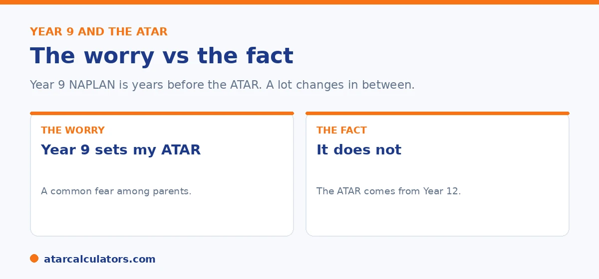

Here is the short version. Year 9 NAPLAN does not predict your ATAR. And it does not feed into it. The ATAR is worked out from Year 12 results, which are years away. There is a loose link, in that strong literacy and numeracy help with everything later. But a Year 9 result does not set a ceiling. What shapes an ATAR is the senior years. Subject choices, effort, and how a student performs in Year 12.
Year 9 is years before the senior years, yet many parents quietly wonder if a NAPLAN result is an early sign of the ATAR to come. It is an understandable worry, and the answer is reassuring.
Below is what links the two, what does not, and what actually shapes an ATAR. When the time comes, you can work out an ATAR with our ATAR calculators.
Key takeaways
- Year 9 NAPLAN does not feed into the ATAR.
- It does not predict the ATAR either.
- The ATAR comes from Year 12 results, years later.
- There is a loose link: strong skills help with everything later.
- A Year 9 result does not set a ceiling on what is possible.
- Senior subject choices and effort matter far more.
The worry, and the fact
The worry sounds reasonable. If Year 9 NAPLAN measures literacy and numeracy, surely a low result hints at a lower ATAR? In practice, it does not work that way.

Year 9 NAPLAN does not feed into the ATAR. The ATAR is calculated from Year 12 results. A Year 9 test and a Year 12 ATAR are years apart, and a lot changes in between.
Is there any link at all?
There is a loose link, and it is worth understanding so you do not over-read it. Strong reading and numeracy skills help a student across every subject. So a child who is doing well in Year 9 often has a good foundation for later.
However, a foundation is not a forecast. Plenty of students who were average in Year 9 go on to strong ATARs. And a strong Year 9 result is no guarantee on its own. The link is general, not predictive.
What actually shapes an ATAR
The ATAR is shaped by the senior years, not by Year 9. The biggest factors are the subjects a student chooses, and how those subjects scale. The effort they put in across Years 11 and 12, and how they perform in their final exams and assessments, matter just as much.
All of that is years ahead of Year 9, and all of it is within a student's control. When the time comes, you can explore how it works with our ATAR calculators.
Want to understand how the ATAR is actually worked out?
Explore the ATAR calculators →So how much does Year 9 matter?
Year 9 NAPLAN matters as a progress check. It can show you where your child is strong and where they could use support, while there is still plenty of time to act. That is genuinely useful.
What it is not is a verdict on the future. It does not decide the HSC, and it does not decide the ATAR. Use it to guide support now, not to predict an outcome years away. For the full picture, see our Year 9 NAPLAN guide.
To put the weight of a Year 9 result in proportion, it helps to see how much sits between it and an ATAR. Three or more years separate the two. In that time, a student's marks can move substantially. Study skills mature, motivation shifts once senior school raises the stakes, and subject choices settle into areas of strength. The ATAR itself is built from senior (Year 11 and 12) results, scaled and ranked against that year's cohort, none of which exists at Year 9. So there is simply no mechanism by which a Year 9 NAPLAN score determines it. That is why any correlation is loose at best. A strong Year 9 result is an encouraging sign of solid literacy and numeracy foundations. And a weaker one flags areas worth supporting. But neither locks in a destination. The genuinely useful role of Year 9 NAPLAN is diagnostic and immediate. It shows. There is ample time to act, where a child is thriving and where some targeted help would pay off, in reading, writing, or numeracy. Used that way, it improves the years that actually shape the ATAR rather than predicting it. So the calm and accurate reading is this. Treat a Year 9 result as a checkpoint that guides support now, not a forecast of Year 12. Put your energy into the steady learning across the intervening years that genuinely builds toward a strong finish.
A note to keep things calm
If your child's Year 9 result was lower than you hoped, do not read it as a sign of a lower ATAR. It is not. Use it to find the areas to support, and keep the long view.
If their result was strong, be pleased, and keep supporting steady habits. Either way, the ATAR will be earned in the senior years, not in Year 9.
How to use a Year 9 result well
The sensible use of a Year 9 NAPLAN result is as a gentle check on literacy and numeracy before the senior years. If it flags a weak area, there is time to shore it up.
So treat it as an early signal, not a prediction. Acting on a gap in Year 9 or 10 is far easier than discovering it in Year 12.
Trajectory beats any single test
What shapes an ATAR is years of steady work, subject choices, and effort across senior school. One test in Year 9 cannot capture any of that. It is a snapshot taken years earlier.
So a strong Year 9 result is encouraging, and a weak one is a prompt, but neither locks anything in. The years in between matter far more.
Acting on a gap early
The real value of Year 9 NAPLAN for the ATAR is indirect. If it flags a weakness in reading or numeracy, addressing it in Year 9 or 10 makes the senior years smoother. Strong literacy and numeracy underpin almost every subject.
So rather than reading a Year 9 result as an ATAR prediction, use it as an early, low-stakes prompt to strengthen the skills that senior study relies on.
Common questions
Does Year 9 NAPLAN predict your ATAR?
No. Year 9 NAPLAN does not feed into the ATAR and does not predict it. The ATAR is worked out from Year 12 results, which are years away.
Can NAPLAN predict Year 12 results?
Not reliably. There is a loose link, since strong literacy and numeracy help across subjects, but a Year 9 result does not forecast Year 12. Many average Year 9 students go on to strong results.
Is Year 9 NAPLAN linked to the HSC or ATAR?
Year 9 NAPLAN does not feed into the HSC or the ATAR. The HSC minimum standard is met separately in Years 10 to 12, and the ATAR comes from Year 12 results.
Does a low Year 9 NAPLAN mean a low ATAR?
No. A low Year 9 result does not set a ceiling. It is a snapshot from years earlier, and the ATAR is shaped by senior subjects and effort, which are within a student's control.
How much does Year 9 NAPLAN matter?
It matters as a progress check that shows strengths and gaps while there is time to act. It does not decide the HSC or the ATAR, so it is not a high-stakes result.
What actually decides the ATAR?
The senior years: subject choices, how subjects scale, effort across Years 11 and 12, and performance in final exams and assessments. None of that is set in Year 9.
See how the ATAR really works
Explore our free ATAR calculators to understand how a Year 12 ATAR is worked out. No signup.
Open the ATAR calculators →Related guides
This guide is general information for parents, not formal advice. HSC, NAPLAN and ATAR rules can change. So always confirm the current HSC minimum standard with NESA and check NAPLAN details at the National Assessment Program site. Reviewed by the ATARCalculators Editorial Team.